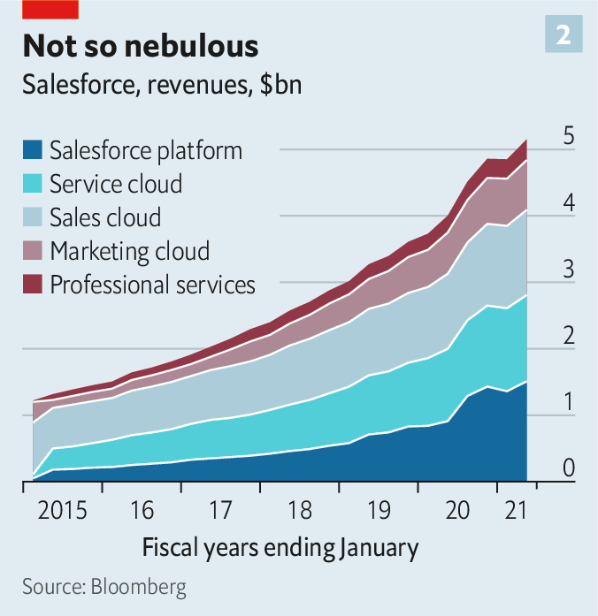

Text
2020-12-09T15:06:37+00:00
Business software
商业软件
商業軟件
Get me some Slack
给我腾个地儿
給我騰個地兒
The boss of Salesforce has his sights set on tech’s big league
Salesforce的老板志在跻身科技巨头之列
Salesforce的老闆志在躋身科技巨頭之列
MARC BENIOFF got the idea for the “ohana” corporate culture on a sabbatical in Hawaii. The term refers to a network of families bound together. He likes to think of Salesforce, the world’s third-biggest software firm, which he founded and runs, as just such a network. On December 1st Mr Benioff welcomed Slack, an instant-messaging tool, to his ohana. The $27.7bn deal is one of the biggest ever in the software industry.
马克·贝尼奥夫（Marc Benioff）在夏威夷休假的时候想到了要建立一种“ohana”公司文化。Ohana的意思是紧密连接的大家庭网络。他喜欢把自己创立并掌管的全球第三大软件公司Salesforce看成是这样的家庭网络。12月1日，贝尼奥夫让即时通讯工具Slack加入了他的ohana。这宗交易耗资277亿美元，是软件业史上最大的并购案之一。
馬克·貝尼奧夫（Marc Benioff）在夏威夷休假的時候想到了要建立一種“ohana”公司文化。Ohana的意思是緊密連接的大家庭網絡。他喜歡把自己創立並掌管的全球第三大軟件公司Salesforce看成是這樣的家庭網絡。12月1日，貝尼奧夫讓即時通訊工具Slack加入了他的ohana。這宗交易耗資277億美元，是軟件業史上最大的併購案之一。
Like many family alliances the tie-up is partly about power and feuds. Slack’s product has a cultlike following, which Salesforce wants to harness to build a tech platform that sells digital tools that no firm can do without. Stewart Butterfield, Slack’s co-founder, hailed it (hyperbolically) as “the most strategic combination in the history of software”. The feud is with Microsoft, whose advances Slack spurned four years ago. The deal makes Salesforce a far more formidable challenger to the giant.
和许多家庭联姻一样，这起收购也涉及权力和宿怨。Slack的产品有一批狂热的追随者，Salesforce希望借此打造一个科技平台，销售任何公司都离不开的数字工具。Slack的联合创始人斯图尔特·巴特菲尔德（Stewart Butterfield）（夸张地）盛赞这是“软件业史上最有战略意义的结合”。宿怨则事关微软，它曾在四年接洽收购Slack被拒。这次收购让Salesforce对这家软件业巨头的威胁大增。
和許多家庭聯姻一樣，這起收購也涉及權力和宿怨。Slack的產品有一批狂熱的追隨者，Salesforce希望藉此打造一個科技平台，銷售任何公司都離不開的數字工具。Slack的聯合創始人斯圖爾特·巴特菲爾德（Stewart Butterfield）（誇張地）盛讚這是“軟件業史上最有戰略意義的結合”。宿怨則事關微軟，它曾在四年接洽收購Slack被拒。這次收購讓Salesforce對這家軟件業巨頭的威脅大增。
Mr Benioff may be best known to the public for championing corporate “purpose” (and owning Time magazine). But in his own industry he wins kudos for disruptive innovation. In the 2000s the young Salesforce basically invented software-as-a-service (SaaS)—accessing programs remotely rather than installing them on office computers—particularly for managing customer relationships. Microsoft, Oracle, SAP and others had to follow suit.
贝尼奥夫最为公众所熟知的或许是他倡导企业“使命”（以及拥有《时代》杂志）。但在软件行业内，他是以颠覆性创新赢得威望。在本世纪头十年，年轻的Salesforce公司可说是发明了软件即服务（SaaS，即远程使用程序，无需安装到办公计算机上），特别是在客户关系管理方面。微软、甲骨文、SAP和其他公司也只能步其后尘。
貝尼奧夫最為公眾所熟知的或許是他倡導企業“使命”（以及擁有《時代》雜誌）。但在軟件行業內，他是以顛覆性創新贏得威望。在本世紀頭十年，年輕的Salesforce公司可說是發明了軟件即服務（SaaS，即遠程使用程序，無需安裝到辦公計算機上），特別是在客戶關係管理方面。微軟、甲骨文、SAP和其他公司也只能步其後塵。
The explosive growth of SaaS has propelled Salesforce to ever greater heights. And to greater breadth: since 2016 it has spent over $25bn snapping up over a dozen firms to boost its computing chops. It bought Tableau, a data-analytics platform, and MuleSoft, which helps firms connect legacy IT systems to the cloud.
SaaS的爆炸式增长推动Salesforce节节上升，也扩大了它的版图：自2016年以来，它已斥资超过250亿美元收购了十几家公司以提升其计算能力。它收购了数据分析平台Tableau和帮助企业把旧有IT系统接到云端的MuleSoft。
SaaS的爆炸式增長推動Salesforce節節上升，也擴大了它的版圖：自2016年以來，它已斥資超過250億美元收購了十幾家公司以提升其計算能力。它收購了數據分析平台Tableau和幫助企業把舊有IT系統接到雲端的MuleSoft。

Then came the pandemic. A boom in tech stocks lifted Salesforce’s market value from $144bn to $225bn this year. Slack, whose share price has lagged behind those of Zoom and other enablers of remote work, suddenly looked affordable. Mr Benioff is paying with a mix of cash and Salesforce stock. His firm’s valuation is still well behind Microsoft’s $1.6trn. But it may at last have a shot at tech’s top table. It already rules in customer-relationship software and thrives in other areas of business software, especially since acquiring Tableau. Aaron Levie, boss of Box, a cloud firm, describes Slack as “another dot on the graph” that plots Salesforce’s rise to become the world’s number-two business-software company (behind Microsoft). Perhaps, Mr Levie muses, “even the largest”.
接着新冠疫情爆发。科技股暴涨，Salesforce的市值今年从1440亿美元升至2250亿美元。而Slack的股价落后于Zoom等其他远程办公工具，突然之间显得不再高不可攀。贝尼奥夫以现金加Salesforce股票出手收购。他的公司的市值仍远远落后于微软的1.6万亿美元。但它也许终于有机会跻身科技巨头之列。它已称霸客户关系软件，在商业软件的其他领域也如鱼得水，特别是在收购Tableau之后。云计算公司Box的老板阿隆·列维（Aaron Levie）形容，Slack是Salesforce计划晋身全球第二大商业软件公司（仅次于微软）的“版图上的又一城”。也许，他思忖道，“甚至是最大的”。
接着新冠疫情爆發。科技股暴漲，Salesforce的市值今年從1440億美元升至2250億美元。而Slack的股價落後於Zoom等其他遠程辦公工具，突然之間顯得不再高不可攀。貝尼奧夫以現金加Salesforce股票出手收購。他的公司的市值仍遠遠落後於微軟的1.6萬億美元。但它也許終於有機會躋身科技巨頭之列。它已稱霸客戶關係軟件，在商業軟件的其他領域也如魚得水，特別是在收購Tableau之後。雲計算公司Box的老闆阿隆·列維（Aaron Levie）形容，Slack是Salesforce計劃晉身全球第二大商業軟件公司（僅次於微軟）的“版圖上的又一城”。也許，他思忖道，“甚至是最大的”。
Such sentiments explain why for Microsoft the Slack deal is a red rag. Slack got the giant’s attention a few years ago when Mr Butterfield promised to wipe out email, which would threaten Outlook, Microsoft’s popular inbox, and its email server, Exchange. “If you are going to come at the king, you’d better not miss,” quips Charles Fitzgerald, a former executive at Microsoft who is now an angel investor. Back then Mr Butterfield did miss—and Microsoft shot back with a new product, Teams, combining messaging with videoconferencing and other functions. Slack has launched an antitrust complaint against it for offering Teams free of charge in its Office bundle, together with its popular word processor and Excel spreadsheets.
这些看法解释了为什么Salesforce收购Slack会惹怒微软。几年前微软注意到了Slack，当时巴特菲尔德誓言要淘汰电子邮件，而这会威胁微软用户广泛的电邮管理软件Outlook和电邮服务器Exchange。“要刺杀国王，你最好别失手。” 天使投资人、微软前高管查尔斯·菲茨杰拉德（Charles Fitzgerald）打趣说。那会儿巴特菲尔德的确失手了，而微软推出了结合即时通讯和视频会议等功能的新产品Teams来反击。Slack已提出反垄断投诉，指责微软把Teams免费捆绑到Office系列软件中，和流行的文字处理程序Word以及电子表格软件Excel一起提供给客户。
這些看法解釋了為什麼Salesforce收購Slack會惹怒微軟。幾年前微軟注意到了Slack，當時巴特菲爾德誓言要淘汰電子郵件，而這會威脅微軟用戶廣泛的電郵管理軟件Outlook和電郵服務器Exchange。“要刺殺國王，你最好別失手。” 天使投資人、微軟前高管查爾斯·菲茨傑拉德（Charles Fitzgerald）打趣說。那會兒巴特菲爾德的確失手了，而微軟推出了結合即時通訊和視頻會議等功能的新產品Teams來反擊。Slack已提出反壟斷投訴，指責微軟把Teams免費捆綁到Office系列軟件中，和流行的文字處理程序Word以及電子表格軟件Excel一起提供給客戶。
Teams is a big reason why Mr Butterfield is in an ohana-ish mood. Like Zoom, it has videoconferencing—and far more active users than Slack, which explains the latter’s lacklustre stockmarket performance. Salesforce will invest to reinvigorate it, presumably adding more video-meeting capability. Its sales machine will push Slack beyond early adopters into the corporate mainstream.
Teams是巴特菲尔德想加入ohana大家庭的一大原因。跟Zoom一样，Teams具有视频会议功能，而且活跃用户数远远超过Slack，后者在股市表现不佳的原因也许就在于此。Salesforce将投资重振Slack，想必会扩展视频会议功能。Salesforce的销售团队会把Slack从早期尝鲜的用户群体推向企业主流。
Teams是巴特菲爾德想加入ohana大家庭的一大原因。跟Zoom一樣，Teams具有視頻會議功能，而且活躍用戶數遠遠超過Slack，後者在股市表現不佳的原因也許就在於此。Salesforce將投資重振Slack，想必會擴展視頻會議功能。Salesforce的銷售團隊會把Slack從早期嘗鮮的用戶群體推向企業主流。
That will intensify Salesforce’s rivalry with Microsoft, with which it will compete in three main areas. With Slack it will directly take on Office, now that Teams has been folded into it. Slack also offers a gateway to 2,400 software tools, mostly created by independent companies, that compete with other Microsoft products. Salesforce and Slack could bundle all this software into a convenient alternative to Microsoft. Second, Salesforce competes with the giant in customer-relationship management, where it plans to make Slack the user interface, and other business functions.
这将激化Salesforce和微软的竞争，主要在三个领域展开。首先，有了Slack，Salesforce现在会直接挑战捆绑了Teams的Office。Slack还是通往2400个软件工具的门户，而这些主要由独立公司开发的工具又是微软其他产品的对手。Salesforce和Slack可以将所有这些软件捆绑为一个便捷的软件包，作为微软产品的替代。其次，在客户关系管理和其他商业服务领域，Salesforce也在对撼微软，计划把Slack打造成为客户关系管理服务的用户界面。
這將激化Salesforce和微軟的競爭，主要在三個領域展開。首先，有了Slack，Salesforce現在會直接挑戰捆綁了Teams的Office。Slack還是通往2400個軟件工具的門戶，而這些主要由獨立公司開發的工具又是微軟其他產品的對手。Salesforce和Slack可以將所有這些軟件捆綁為一個便捷的軟件包，作為微軟產品的替代。其次，在客戶關係管理和其他商業服務領域，Salesforce也在對撼微軟，計劃把Slack打造成為客戶關係管理服務的用戶界面。
Then there is the bigger battle over platforms. Both Salesforce and Microsoft aim to give businesspeople who do not themselves write software the tools to build customised programs—“with clicks not code”, as Salesforce puts it. Salesforce’s Developer 360 is punier than Microsoft’s Power Platform but is improving, thanks to MuleSoft and Einstein, a set of artificial-intelligence services. Slack could be a “Trojan horse” to hook customers of Salesforce’s own clients on more of the company’s applications, says George Gilbert of TechAlpha Partners, a consultancy.
再有是围绕平台展开的更大的较量。Salesforce和微软的目标都是为本身不会编写软件的商界人士提供工具来打造定制化程序——用Salesforce的话说，就是“只要点点鼠标，不用写代码”。Salesforce的Developer 360不如微软的Power Platform强大，但正在MuleSoft以及人工智能服务Einstein的辅助下不断提升。Slack可能充当 “特洛伊木马”，把Salesforce的企业客户的客户吸引到公司的更多应用程序上，咨询公司TechAlpha Partners的乔治·吉尔伯特（George Gilbert）表示。
再有是圍繞平台展開的更大的較量。Salesforce和微軟的目標都是為本身不會編寫軟件的商界人士提供工具來打造定製化程序——用Salesforce的話說，就是“只要點點鼠標，不用寫代碼”。Salesforce的Developer 360不如微軟的Power Platform強大，但正在MuleSoft以及人工智能服務Einstein的輔助下不斷提升。Slack可能充當 “特洛伊木馬”，把Salesforce的企業客戶的客戶吸引到公司的更多應用程序上，諮詢公司TechAlpha Partners的喬治·吉爾伯特（George Gilbert）表示。
Success is not in the bag for Salesforce. Mr Benioff may fail to turn his vision into reality. Even if Slack gets its video act together it would be late to videoconferencing, which has matured rapidly during the pandemic. Most large corporate clients already use Zoom, Teams or Cisco’s Webex software. And Salesforce might mistakenly end up sacrificing Slack’s growth while trying to bolster its own businesses.
Salesforce并非稳操胜券。贝尼奥夫不一定能把愿景变为现实。即使Slack全力加强视频功能也可能为时已晚，因为视频会议市场在疫情期间已经迅速成熟。大多数大公司已经在用Zoom、Teams或者思科的Webex软件了。而且在努力加强自身业务之时，Salesforce也可能错误地牺牲掉Slack的增长。
Salesforce並非穩操勝券。貝尼奧夫不一定能把願景變為現實。即使Slack全力加強視頻功能也可能為時已晚，因為視頻會議市場在疫情期間已經迅速成熟。大多數大公司已經在用Zoom、Teams或者思科的Webex軟件了。而且在努力加強自身業務之時，Salesforce也可能錯誤地犧牲掉Slack的增長。
Moreover, Slack is not in and of itself enough to make Salesforce into a genuine rival to Microsoft. Mr Benioff would need to build (or buy) capabilities in document storage, cyber-security and more, reckons Mark Moerdler of Bernstein, a broker.
另外，单凭Slack，Salesforce还不足以成为微软的真正对手。券商盛博的马克·莫德勒（Mark Moerdler）认为，贝尼奥夫还需要构建（或收购）文件存储和网络安全等方面的能力。
另外，單憑Slack，Salesforce還不足以成為微軟的真正對手。券商盛博的馬克·莫德勒（Mark Moerdler）認為，貝尼奧夫還需要構建（或收購）文件存儲和網絡安全等方面的能力。
Wall Street is already wary of Salesforce’s big acquisitions; the firm’s share price dipped when news of the Slack deal surfaced. Still, SaaS holds vast potential, as Microsoft shareholders know well. And, as Mr Butterfield noted on the deal’s announcement, Mr Benioff has already started one revolution. Betting against this ohana is not for the faint-hearted.■
华尔街本就已对Salesforce的大规模收购持谨慎态度，此次收购Slack的消息一出，Salesforce的股价应声下跌。但SaaS有着巨大潜力，微软的股东对此深有体会。而且，正如巴特菲尔德在交易公告中指出的，贝尼奥夫已经发动过一场革命。胆小的人可不适合做空这个大家庭。
華爾街本就已對Salesforce的大規模收購持謹慎態度，此次收購Slack的消息一出，Salesforce的股價應聲下跌。但SaaS有着巨大潛力，微軟的股東對此深有體會。而且，正如巴特菲爾德在交易公告中指出的，貝尼奧夫已經發動過一場革命。膽小的人可不適合做空這個大家庭。